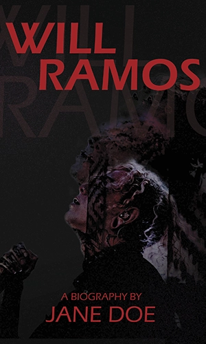

Jane Doe's Newest Biography

In this compelling biography, delve into the life of Will Ramos, the dynamic vocalist of the metalcore band Lorna Shore. This book chronicles his journey from a young music enthusiast to a defining voice in the metal scene. Highlighting his pivotal moments, including his rise to prominence with Lorna Shore, the biography explores Will’s unique blend of technical skill and emotional depth that resonates with fans worldwide. This is not just a story of musical achievement; it’s a testament to the power of passion, perseverance, and the universal language of music.
Look Inside